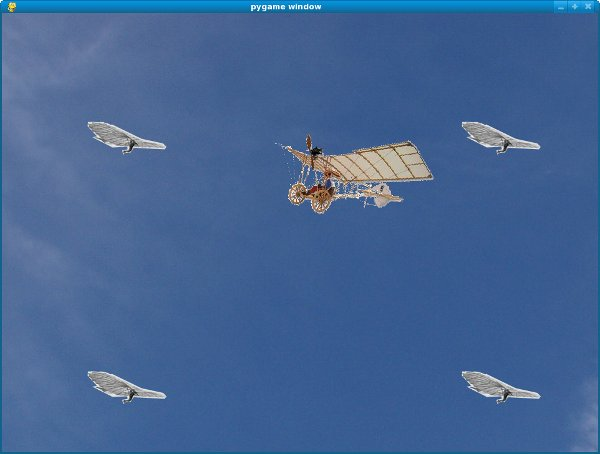
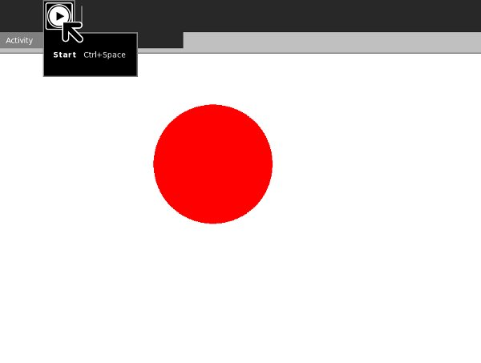
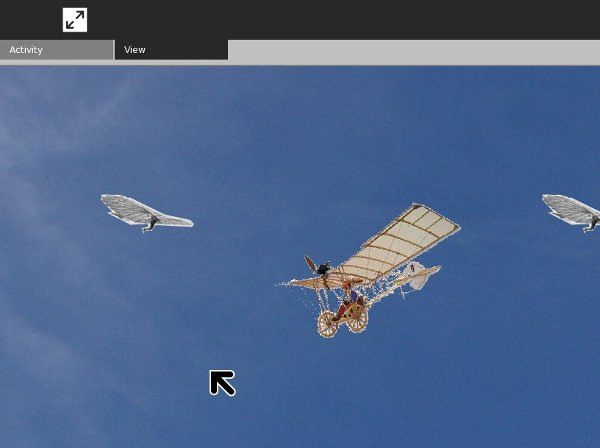

Making Activities Using PyGame
Introduction
PyGame and PyGTK are two different ways to make a Python program with a graphical user interface. Normally you would not use both in the same program. Each of them has its own way of creating a window and each has its own way of handling events.
The base class Activity we have been using is an extension of the PyGTK Window class and uses PyGTK event handling. The toolbars all Activities use are PyGTK components. In short, any Activity written in Python must use PyGTK. Putting a PyGame program in the middle of a PyGTK program is a bit like putting a model ship in a bottle. Fortunately there is some Python code called SugarGame that will make it possible to do that.
Before we figure out how we'll get it in the bottle, let's have a look at our ship.
Making A Standalone Game Using PyGame
As you might expect, it's a good idea to make a standalone Python game using PyGame before you make an Activity out of it. I am not an experienced PyGame developer, but using the tutorial Rapid Game Development with Python by Richard Jones at this URL:
http://richard.cgpublisher.com/product/pub.84/prod.11
I was able to put together a modest game in about a day. It would have been sooner but the tutorial examples had bugs in them and I had to spend a fair amount of time using The GIMP to create image files for the sprites in the game.
Sprites are small images, often animated, that represent objects in a game. They generally have a transparent background so they can be drawn on top of a background image. I used the PNG format for my sprite files because it supports having an alpha channel (another term that indicates that part of the image is transparent).
PyGame has code to display background images, to create sprites and move them around on the background, and to detect when sprites collide with one another and do something when that happens. This is the basis for making a lot of 2D games. There are lots of games written with PyGame that could be easily adapted to be Sugar Activities.
My game is similar to the car game in the tutorial, but instead of a car I have an airplane. The airplane is the Demoiselle created by Alberto Santos-Dumont in 1909. Instead of having "pads" to collide with I have four students of Otto Lilienthal hovering motionless in their hang gliders. The hang gliders pitch downwards when Santos-Dumont collides with them. The controls used for the game have been modified too. I use the Plus and Minus keys on both the main keyboard and the keypad, plus the keypad 9 and 3 keys, to open and close the throttle and the Up and Down arrows on both the main keyboard and the keypad to move the joystick forward and back. Using the keypad keys is useful for a couple of reasons. First, some versions of sugar-emulator don't recognize the arrow keys on the main keyboard. Second, the arrow keys on the keypad map to the game controller on the XO laptop, and the non-arrow keys on the keypad map to the other buttons on the XO laptop screen. These buttons can be used to play the game when the XO is in tablet mode.
As a flight simulator it isn't much, but it does demonstrate at least some of the things PyGame can do. Here is the code for the game, which I'm calling Demoiselle:
#! /usr/bin/env python
import pygame
import math
import sys
class Demoiselle:
"This is a simple demonstration of using PyGame \
sprites and collision detection."
def __init__(self):
self.background = pygame.image.load('sky.jpg')
self.screen = pygame.display.get_surface()
self.screen.blit(self.background, (0, 0))
self.clock = pygame.time.Clock()
self.running = True
gliders = [
GliderSprite((200, 200)),
GliderSprite((800, 200)),
GliderSprite((200, 600)),
GliderSprite((800, 600)),
]
self. glider_group = pygame.sprite.RenderPlain(gliders)
def run(self):
"This method processes PyGame messages"
rect = self.screen.get_rect()
airplane = AirplaneSprite('demoiselle.png', rect.center)
airplane_sprite = pygame.sprite.RenderPlain(airplane)
while self.running:
self.clock.tick(30)
for event in pygame.event.get():
if event.type == pygame.QUIT:
self.running = False
return
elif event.type == pygame.VIDEORESIZE:
pygame.display.set_mode(event.size, pygame.RESIZABLE)
self.screen.blit(self.background, (0, 0))
if not hasattr(event, 'key'):
continue
down = event.type == pygame.KEYDOWN
if event.key == pygame.K_DOWN or \
event.key == pygame.K_KP2:
airplane.joystick_back = down * 5
elif event.key == pygame.K_UP or \
event.key == pygame.K_KP8:
airplane.joystick_forward = down * -5
elif event.key == pygame.K_EQUALS or \
event.key == pygame.K_KP_PLUS or \
event.key == pygame.K_KP9:
airplane.throttle_up = down * 2
elif event.key == pygame.K_MINUS or \
event.key == pygame.K_KP_MINUS or \
event.key == pygame.K_KP3:
airplane.throttle_down = down * -2
self.glider_group.clear(self.screen, self.background)
airplane_sprite.clear(self.screen, self.background)
collisions = pygame.sprite.spritecollide(airplane, \
self.glider_group, False)
self.glider_group.update(collisions)
self.glider_group.draw(self.screen)
airplane_sprite.update()
airplane_sprite.draw(self.screen)
pygame.display.flip()
class AirplaneSprite(pygame.sprite.Sprite):
"This class represents an airplane, the Demoiselle \
created by Alberto Santos-Dumont"
MAX_FORWARD_SPEED = 10
MIN_FORWARD_SPEED = 1
ACCELERATION = 2
TURN_SPEED = 5
def __init__(self, image, position):
pygame.sprite.Sprite.__init__(self)
self.src_image = pygame.image.load(image)
self.rect = pygame.Rect(self.src_image.get_rect())
self.position = position
self.rect.center = self.position
self.speed = 1
self.direction = 0
self.joystick_back = self.joystick_forward = \
self.throttle_down = self.throttle_up = 0
def update(self):
"This method redraws the airplane in response\
to events."
self.speed += (self.throttle_up + self.throttle_down)
if self.speed > self.MAX_FORWARD_SPEED:
self.speed = self.MAX_FORWARD_SPEED
if self.speed < self.MIN_FORWARD_SPEED:
self.speed = self.MIN_FORWARD_SPEED
self.direction += (self.joystick_forward + self.joystick_back)
x_coord, y_coord = self.position
rad = self.direction * math.pi / 180
x_coord += -self.speed * math.cos(rad)
y_coord += -self.speed * math.sin(rad)
screen = pygame.display.get_surface()
if y_coord < 0:
y_coord = screen.get_height()
if x_coord < 0:
x_coord = screen.get_width()
if x_coord > screen.get_width():
x_coord = 0
if y_coord > screen.get_height():
y_coord = 0
self.position = (x_coord, y_coord)
self.image = pygame.transform.rotate(self.src_image, -self.direction)
self.rect = self.image.get_rect()
self.rect.center = self.position
class GliderSprite(pygame.sprite.Sprite):
"This class represents an individual hang glider as developed\
by Otto Lilienthal."
def __init__(self, position):
pygame.sprite.Sprite.__init__(self)
self.normal = pygame.image.load('glider_normal.png')
self.rect = pygame.Rect(self.normal.get_rect())
self.rect.center = position
self.image = self.normal
self.hit = pygame.image.load('glider_hit.png')
def update(self, hit_list):
"This method redraws the glider when it collides\
with the airplane and when it is no longer \
colliding with the airplane."
if self in hit_list:
self.image = self.hit
else:
self.image = self.normal
def main():
"This function is called when the game is run from the command line"
pygame.init()
pygame.display.set_mode((0, 0), pygame.RESIZABLE)
game = Demoiselle()
game.run()
sys.exit(0)
if __name__ == '__main__':
main()
And here is the game in action:

You'll find the code for this game in the file demoiselle.py in the book examples project in Git.
Introducing SugarGame
SugarGame is not part of Sugar proper. If you want to use it you'll need to include the Python code for SugarGame inside your Activity bundle. I've included the version of SugarGame I'm using in the book examples project in the sugargame directory, but when you make your own games you'll want to be sure and get the latest code to include. You can do that by downloading the project from Gitorious using these commands:
mkdir sugargame
cd sugargame
git clone git://git.sugarlabs.org/sugargame/mainline.gitYou'll see two subdirectories in this project: sugargame and test, plus a README.txt file that contains information on using sugargame in your own Activities. The test directory contains a simple PyGame program that can be run either standalone or as an Activity. The standalone program is in the file named TestGame.py. The Activity, which is a sort of wrapper around the standalone version, is in file TestActivity.py.
If you run TestGame.py from the command line you'll see it displays a bouncing ball on a white background. To try running the Activity version you'll need to run
./setup.py dev
from the command line first. I was not able to get the Activity to work under sugar-emulator until I made two changes to it:
- I made a copy of the sugargame directory within the test directory.
- I removed the line reading "sys.path.append('..') # Import sugargame package from top directory." from TestActivity.py. Obviously this line is supposed to help the program find the sugargame directory in the project but it didn't work in Fedora 10. Your own experience may be different.
The Activity looks like this:

The PyGame toolbar has a single button that lets you make the bouncing ball pause and resume bouncing.
Making A Sugar Activity Out Of A PyGame Program
Now it's time to put our ship in that bottle. The first thing we need to do is make a copy of the sugargame directory of the SugarGame project into the mainline directory of our own project.
The README.txt file in the SugarGame project is worth reading. It tells us to make an Activity based on the TestActivity.py example in the SugarGame project. This will be our bottle. Here is the code for mine, which is named DemoiselleActivity.py:
# DemoiselleActivity.py
# Copyright (C) 2010 James D. Simmons
#
# This program is free software; you can redistribute it and/or modify
# it under the terms of the GNU General Public License as published by
# the Free Software Foundation; either version 2 of the License, or
# (at your option) any later version.
#
# This program is distributed in the hope that it will be useful,
# but WITHOUT ANY WARRANTY; without even the implied warranty of
# MERCHANTABILITY or FITNESS FOR A PARTICULAR PURPOSE. See the
# GNU General Public License for more details.
#
# You should have received a copy of the GNU General Public License along
# with this program; if not, write to the Free Software Foundation, Inc.,
# 51 Franklin St, Fifth Floor, Boston, MA 02110-1301 USA
#
from gettext import gettext as _
import gtk
import pygame
from sugar.activity import activity
from sugar.graphics.toolbutton import ToolButton
import gobject
import sugargame.canvas
import demoiselle2
class DemoiselleActivity(activity.Activity):
def __init__(self, handle):
super(DemoiselleActivity, self).__init__(handle)
# Build the activity toolbar.
self.build_toolbar()
# Create the game instance.
self.game = demoiselle2.Demoiselle()
# Build the Pygame canvas.
self._pygamecanvas = sugargame.canvas.PygameCanvas(self)
# Note that set_canvas implicitly calls read_file when
# resuming from the Journal.
self.set_canvas(self._pygamecanvas)
self.score = ''
# Start the game running.
self._pygamecanvas.run_pygame(self.game.run)
def build_toolbar(self):
toolbox = activity.ActivityToolbox(self)
activity_toolbar = toolbox.get_activity_toolbar()
activity_toolbar.keep.props.visible = False
activity_toolbar.share.props.visible = False
self.view_toolbar = ViewToolbar()
toolbox.add_toolbar(_('View'), self.view_toolbar)
self.view_toolbar.connect('go-fullscreen',
self.view_toolbar_go_fullscreen_cb)
self.view_toolbar.show()
toolbox.show()
self.set_toolbox(toolbox)
def view_toolbar_go_fullscreen_cb(self, view_toolbar):
self.fullscreen()
def read_file(self, file_path):
score_file = open(file_path, "r")
while score_file:
self.score = score_file.readline()
self.game.set_score(int(self.score))
score_file.close()
def write_file(self, file_path):
score = self.game.get_score()
f = open(file_path, 'wb')
try:
f.write(str(score))
finally:
f.close
class ViewToolbar(gtk.Toolbar):
__gtype_name__ = 'ViewToolbar'
__gsignals__ = {
'needs-update-size': (gobject.SIGNAL_RUN_FIRST,
gobject.TYPE_NONE,
([])),
'go-fullscreen': (gobject.SIGNAL_RUN_FIRST,
gobject.TYPE_NONE,
([]))
}
def __init__(self):
gtk.Toolbar.__init__(self)
self.fullscreen = ToolButton('view-fullscreen')
self.fullscreen.set_tooltip(_('Fullscreen'))
self.fullscreen.connect('clicked', self.fullscreen_cb)
self.insert(self.fullscreen, -1)
self.fullscreen.show()
def fullscreen_cb(self, button):
self.emit('go-fullscreen')
This is a bit fancier than TestActivity.py. I decided that my game didn't really need to be paused and resumed, so I replaced the PyGame toolbar with a View toolbar that lets the user hide the toolbar when it is not needed. I use the read_file() and write_file() methods to save and restore the game score. (Actually this is faked, because I never put in any scoring logic in the game). I also hide the Keep and Share controls in the main toolbar.
As you would expect, getting a ship in a bottle does require the ship to be modified. Here is demoiselle2.py, which has the modifications:
#! /usr/bin/env python
import pygame
import gtk
import math
import sys
class Demoiselle:
"This is a simple demonstration of using PyGame \
sprites and collision detection."
def __init__(self):
self.clock = pygame.time.Clock()
self.running = True
self.background = pygame.image.load('sky.jpg')
def get_score(self):
return '99'
def run(self):
"This method processes PyGame messages"
screen = pygame.display.get_surface()
screen.blit(self.background, (0, 0))
gliders = [
GliderSprite((200, 200)),
GliderSprite((800, 200)),
GliderSprite((200, 600)),
GliderSprite((800, 600)),
]
glider_group = pygame.sprite.RenderPlain(gliders)
rect = screen.get_rect()
airplane = AirplaneSprite('demoiselle.png', rect.center)
airplane_sprite = pygame.sprite.RenderPlain(airplane)
while self.running:
self.clock.tick(30)
# Pump GTK messages.
while gtk.events_pending():
gtk.main_iteration()
# Pump PyGame messages.
for event in pygame.event.get():
if event.type == pygame.QUIT:
self.running = False
return
elif event.type == pygame.VIDEORESIZE:
pygame.display.set_mode(event.size, pygame.RESIZABLE)
screen.blit(self.background, (0, 0))
if not hasattr(event, 'key'):
continue
down = event.type == pygame.KEYDOWN
if event.key == pygame.K_DOWN or \
event.key == pygame.K_KP2:
airplane.joystick_back = down * 5
elif event.key == pygame.K_UP or \
event.key == pygame.K_KP8:
airplane.joystick_forward = down * -5
elif event.key == pygame.K_EQUALS or \
event.key == pygame.K_KP_PLUS or \
event.key == pygame.K_KP9:
airplane.throttle_up = down * 2
elif event.key == pygame.K_MINUS or \
event.key == pygame.K_KP_MINUS or \
event.key == pygame.K_KP3:
airplane.throttle_down = down * -2
glider_group.clear(screen, self.background)
airplane_sprite.clear(screen, self.background)
collisions = pygame.sprite.spritecollide(airplane, \
glider_group, False)
glider_group.update(collisions)
glider_group.draw(screen)
airplane_sprite.update()
airplane_sprite.draw(screen)
pygame.display.flip()
class AirplaneSprite(pygame.sprite.Sprite):
"This class represents an airplane, the Demoiselle \
created by Alberto Santos-Dumont"
MAX_FORWARD_SPEED = 10
MIN_FORWARD_SPEED = 1
ACCELERATION = 2
TURN_SPEED = 5
def __init__(self, image, position):
pygame.sprite.Sprite.__init__(self)
self.src_image = pygame.image.load(image)
self.rect = pygame.Rect(self.src_image.get_rect())
self.position = position
self.rect.center = self.position
self.speed = 1
self.direction = 0
self.joystick_back = self.joystick_forward = \
self.throttle_down = self.throttle_up = 0
def update(self):
"This method redraws the airplane in response\
to events."
self.speed += (self.throttle_up + self.throttle_down)
if self.speed > self.MAX_FORWARD_SPEED:
self.speed = self.MAX_FORWARD_SPEED
if self.speed < self.MIN_FORWARD_SPEED:
self.speed = self.MIN_FORWARD_SPEED
self.direction += (self.joystick_forward + self.joystick_back)
x_coord, y_coord = self.position
rad = self.direction * math.pi / 180
x_coord += -self.speed * math.cos(rad)
y_coord += -self.speed * math.sin(rad)
screen = pygame.display.get_surface()
if y_coord < 0:
y_coord = screen.get_height()
if x_coord < 0:
x_coord = screen.get_width()
if x_coord > screen.get_width():
x_coord = 0
if y_coord > screen.get_height():
y_coord = 0
self.position = (x_coord, y_coord)
self.image = pygame.transform.rotate(self.src_image, -self.direction)
self.rect = self.image.get_rect()
self.rect.center = self.position
class GliderSprite(pygame.sprite.Sprite):
"This class represents an individual hang glider as developed\
by Otto Lilienthal."
def __init__(self, position):
pygame.sprite.Sprite.__init__(self)
self.normal = pygame.image.load('glider_normal.png')
self.rect = pygame.Rect(self.normal.get_rect())
self.rect.center = position
self.image = self.normal
self.hit = pygame.image.load('glider_hit.png')
def update(self, hit_list):
"This method redraws the glider when it collides\
with the airplane and when it is no longer \
colliding with the airplane."
if self in hit_list:
self.image = self.hit
else:
self.image = self.normal
def main():
"This function is called when the game is run from the command line"
pygame.init()
pygame.display.set_mode((0, 0), pygame.RESIZABLE)
game = Demoiselle()
game.run()
sys.exit(0)
if __name__ == '__main__':
main()
Why not load both demoiselle.py and demoiselle2.py in Eric and take a few minutes to see if you can figure out what changed between the two versions?
Surprisingly little is different. I added some code to the PyGame main loop to check for PyGTK events and deal with them:
while self.running:
self.clock.tick(30)
# Pump GTK messages.
while gtk.events_pending():
gtk.main_iteration()
# Pump PyGame messages.
for event in pygame.event.get():
if event.type == pygame.QUIT:
self.running = False
return
elif event.type == pygame.VIDEORESIZE:
pygame.display.set_mode(event.size, pygame.RESIZABLE)
screen.blit(self.background, (0, 0))
if not hasattr(event, 'key'):
continue
down = event.type == pygame.KEYDOWN
if event.key == pygame.K_DOWN or \
... continue dealing with PyGame events ...
This has the effect of making PyGame and PyGTK take turns handling events. If this code was not present GTK events would be ignored and you'd have no way to close the Activity, hide the toolbar, etc. You need to add import gtk at the top of the file so these methods can be found.
Of course I also added the methods to set and return scores:
def get_score(self):
return self.score
def set_score(self, score):
self.score = score
The biggest change is in the __init__() method of the Demoiselle class. Originally I had code to display the background image on the screen:
def __init__(self):
self.background = pygame.image.load('sky.jpg')
self.screen = pygame.display.get_surface()
self.screen.blit(self.background, (0, 0))
The problem with this is that sugargame is going to create a special PyGTK Canvas object to replace the PyGame display and the DemoiselleActivity code hasn't done that yet, so self.screen will have a value of None. The only way to get around that is to move any code that refers to the display out of the __init__() method of the class and into the beginning of the method that contains the event loop. This may leave you with an __init__() method that does little or nothing. About the only thing you'll want there is code to create instance variables.
Nothing we have done to demoiselle2.py will prevent it from being run as a standalone Python program.
To try out the game run ./setup.py dev from within the Making_Activities_Using_PyGame directory. When you try out the Activity it should look like this:

Author : ActivitiesUsingPyGame
© James Simmons 2010
License : General Public License
Produced in FLOSS Manuals (http://www.flossmanuals.net)